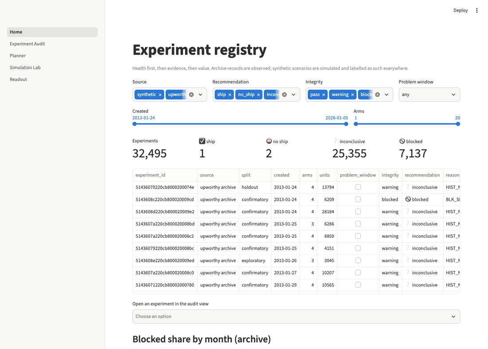
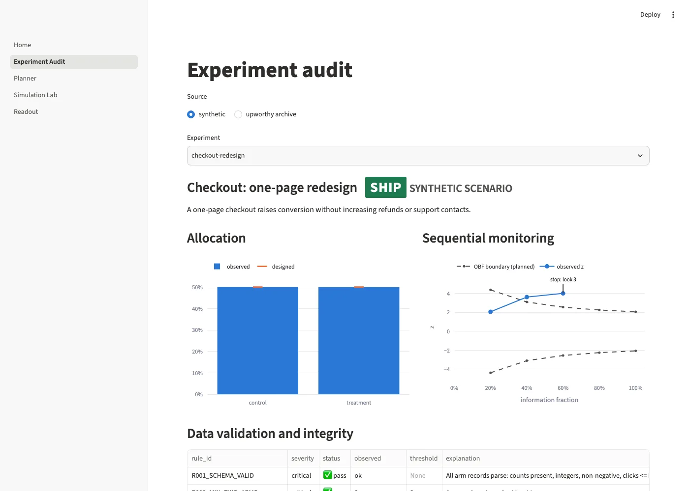
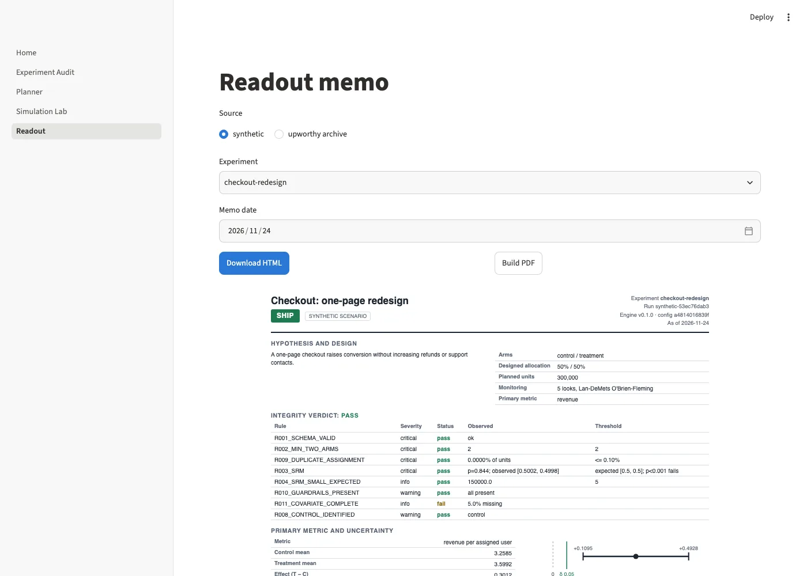
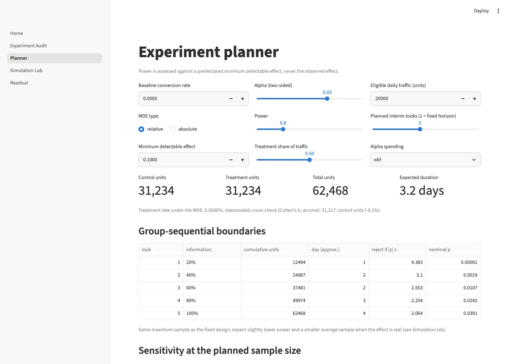
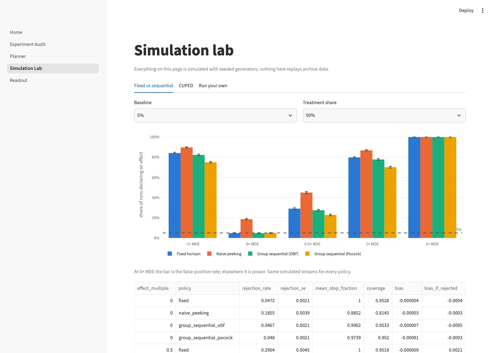

An A/B-test audit and readout system that checks health before evidence, and evidence before value. It audits every test in a real public archive and turns valid results into ship, no ship, inconclusive or blocked, with reason codes and a full decision trace.

of 32,487 published archive tests accounted for. Every excluded row has a reason code
false-positive rate, naive peeking at 10 looks vs O'Brien–Fleming boundaries (nominal 5%)
sample-ratio-mismatch failures inside vs outside the archive's documented randomization bug
fewer users needed for equal power with CUPED at ρ = 0.58
Most experiment dashboards turn a p-value into a green “ship” label. That ships broken experiments, wins too small to matter, and wins that quietly hurt a guardrail metric.
This engine makes those outcomes impossible by construction. An invalid experiment can never ship. A significant but commercially trivial lift doesn't ship. A primary-metric win with guardrail harm is a no ship. Each readout lists every rule it checked, so anyone can audit why it said what it said.
Every experiment goes through the same pipeline. The decision policy evaluates rules in a fixed priority order and the first match wins. Every rule it checks is written to the trace.
Monte Carlo numbers come from 10,000 replications per design. The archive audit covers every published deployed test.
Mean over 6 designs. Dashed line: nominal 5%.
Sample-ratio-mismatch test, by documented bug window.
The median test could only detect a 72% relative lift in click-through at 80% power. Fewer than 0.1% could detect a 20% lift. A dashboard would still have called many of them winners.
Archive tests have no commercial threshold, guardrails or control, so the engine gives them a statistical readout and marks them non-actionable. It doesn't pretend to know what they should have shipped.
| Monitoring policy | False positives | Power at MDE | Sample used | Overestimate when significant |
|---|---|---|---|---|
| Fixed horizon | 5.06% | 80.0% | 100% | 12% |
| Naive peeking (10 looks) | 19.37% | 86.9% | 50% | 53% |
| Group sequential, O'Brien–Fleming | 4.97% | 77.9% | 76% | 29% |
| Group sequential, Pocock | 4.93% | 70.0% | 69% | 55% |
Identical simulated streams for every policy: baselines 1%, 5%, 20%; allocations 50/50 and 70/30; 10 equally spaced looks.



